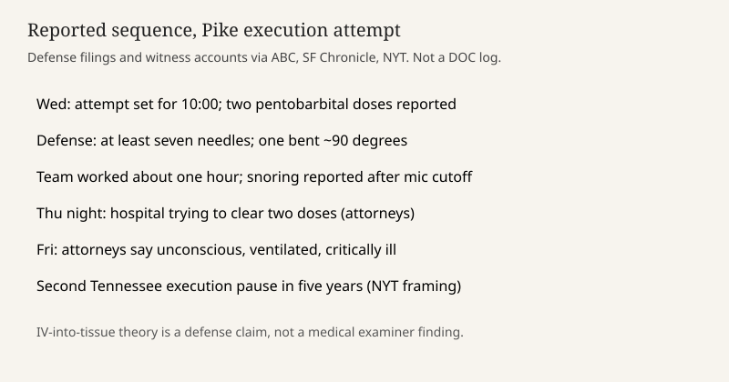

Tennessee · capital punishment · 2–3 October 2026
Attorneys said Christa Pike was unconscious and on a ventilator after two execution attempts

What is agreed across desks
Christa Pike, described by ABC News as the only woman on Tennessee’s death row, was the subject of an execution attempt that did not end in a recorded death. By Friday, 2 October 2026, her attorneys said she was unconscious, on a ventilator, and critically ill in a Nashville hospital, being treated for effects of pentobarbital given during the attempt, including injuries to both arms. The San Francisco Chronicle, carrying the same attorney account, said a Friday court filing reported that she had been placed on a ventilator and that hospital staff were trying to clear two doses of the drug the state uses.
The attempt was set for 10 a.m. Wednesday. Defense accounts say neither an initial dose nor a backup dose produced the intended result, that the team worked for about an hour, and that Pike could still be heard snoring when the chamber microphone was cut. Attorney Randy Spivey counted at least seven needles in her left arm. A filing said one needle was bent at about a 90-degree angle when removed, and that she could be heard crying and whimpering and said her arm felt as if it were about to burst. The New York Times, reporting early Saturday from witness and lawyer accounts at Riverbend, describes two separate injection attempts, a body lifting into a V-shape, and a second moratorium on executions in Tennessee in five years.
What is only a quote
The claim that intravenous lines were misplaced, that veins “blew,” and that pentobarbital entered tissue instead of the bloodstream is a defense theory in the filing. “Apparently at no point did any member of the execution team realize” the lines were wrong, the lawyers wrote. “Apparently” marks inference. No medical examiner’s report or Department of Correction timeline scored here confirms the mechanism. ABC quotes the lawyers calling pentobarbital caustic and highly alkaline and says it burns on contact. That is a description of the drug from counsel, not a toxicology result from this hospital stay.
The Times reconstruction is explicitly “pieced together from the witnesses and lawyer who were at Riverbend.” Witness memory of a grunt, a snore, or a curtain time is evidence of a kind, and it is not the same as a state log. Demonstrators opposed to the death penalty were on the prison grounds; their presence is reported, and it does not establish whether the protocol failed. A last-meal choice is color. Pike did not choose one. That detail does not bear on the IV question.
Mechanism and history a reader needs
Lethal injection in Tennessee, as described in these pieces, uses pentobarbital. The protocol assumes a working vein, a dose that produces deep anesthesia, and a second dose if the first does not. If the drug leaves the vein, it can injure tissue and fail to stop breathing and heart function on the expected clock. States then face a legal and medical problem at once: the warrant has not been carried out, the prisoner is alive and injured, and a second attempt raises Eighth Amendment arguments about cruelty. A moratorium is an executive or corrections decision to stop scheduling further executions. The Times calls this the second such pause in five years. That count is a newsroom frame; the order itself is not quoted in the pieces used here.
Pike’s underlying conviction is older than this week’s filing. The Times refers to a 2007 hearing photograph. This dossier does not retry that case. The news event is the failed attempt and the medical status reported by counsel on Friday. Status can change. “Unconscious and on a ventilator” is a point-in-time attorney statement, not a death certificate and not a guarantee of recovery.
Capital-punishment coverage often slides from a protocol failure into a verdict on the sentence. The checkable claim this weekend is narrower. Two doses were administered or attempted. She was alive afterward. Counsel say she is critically ill. The state has not, in these articles, published a contradictory vital-signs table. Absence of a state medical release is a gap, not proof of the defense IV theory.
What this story is not
It is not a photograph of Pike, of the gurney, or of the hospital. Those frames are on news wires and are the wrong still for a dossier that bars suffering crops. The Capitol image marks the government that sets execution policy. It is not a finding that an executioner committed a crime. It is not a statement that every Tennessee execution has failed.

Source articles and scores
| Outlet | Headline | T | N | C |
|---|---|---|---|---|
| ABC News | Christa Pike unconscious and on ventilator in hospital after botched execution, attorneys say | 88 | -6 | 72 |
| San Francisco Chronicle | Christa Pike on a ventilator and unconscious after failed Tennessee execution, attorneys say | 87 | -4 | 70 |
| New York Times | How a Failed Execution Left Christa Pike Hovering Between Life and Death | 90 | -10 | 78 |